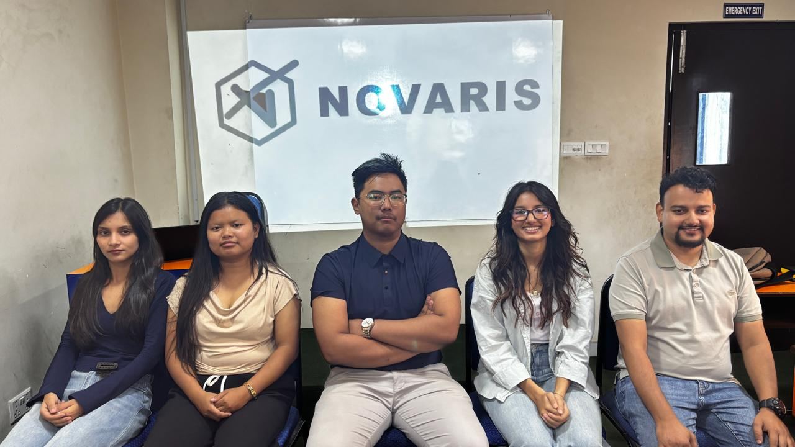
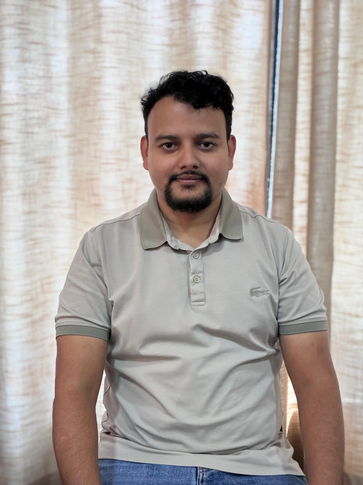
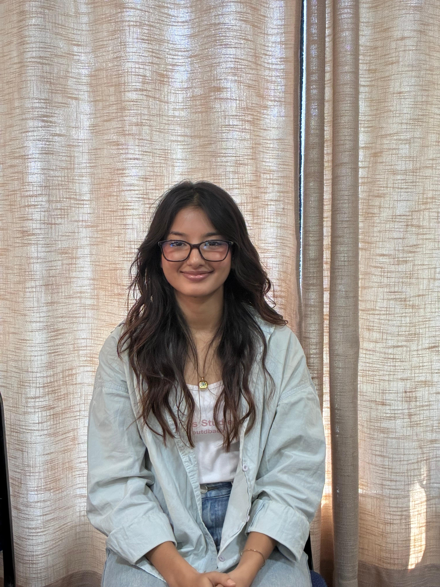
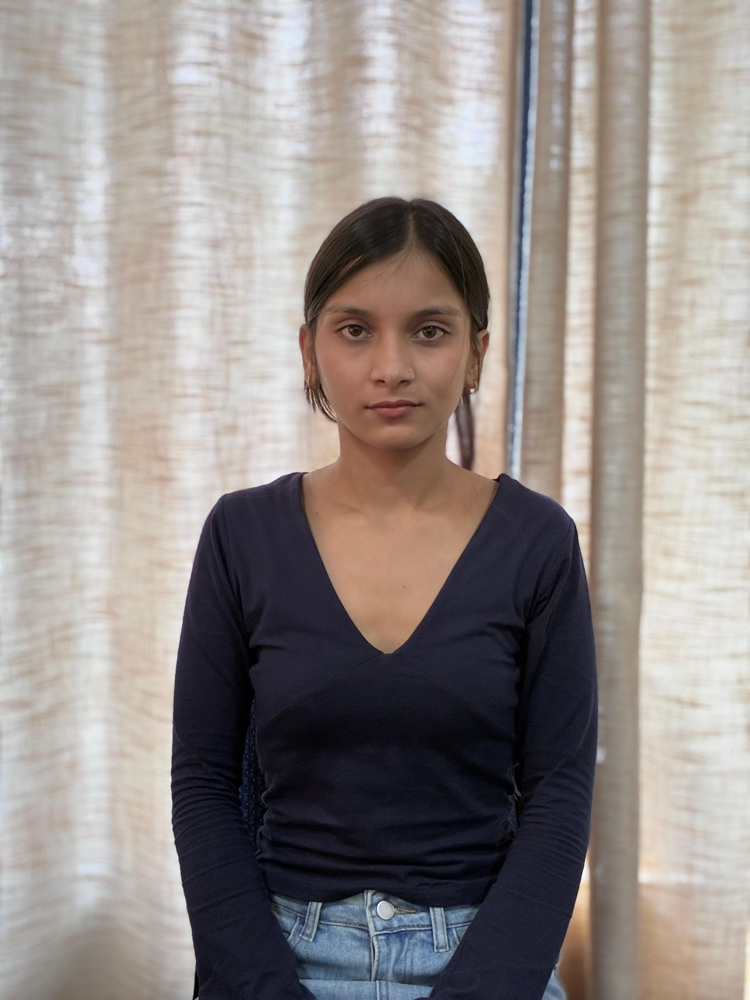

IN
Innovation
Using technology and new ideas to create useful digital solutions.
Team Novaris is a student technology team focused on creating practical, engaging and accessible solutions to real-world problems.
Novaris aims to transform workplace health and safety training through interactive, engaging, and accessible digital experiences that encourage employees to learn, practise, and respond to real-world safety situations.
Our mission is focused on supporting the automotive logistics and warehousing sector, where manual handling and warehouse hazards can present significant safety risks.
“Novaris: Where Innovation Meets Protection.”
Our corporate tagline brings together the two parts of our identity: creating innovative digital solutions while keeping protection and safety at the centre.We want workplace safety training to be more engaging, memorable and effective through innovative digital experiences.
Using technology and new ideas to create useful digital solutions.
Keeping workplace protection central to the SafeLearn concept.
Encouraging users to actively participate in learning rather than only consume information.
Making learning simple to access through common devices and clear interfaces.
We are Team Novaris, a student technology team working together to make workplace health and safety learning more engaging, practical and accessible.


Anish Bhattarai Deputy PM / Technical Lead / Developer
Lizal G.C Design / UI Support
Pratima Giri Research & Quality Analyst / Document SupportUseful for managers responsible for workplace safety and training standards.
Supports supervisors and operations leaders who want more engaging learning.
Provides a digital format for induction and refresher learning activities.
Helps connect employee learning with progress and reporting.